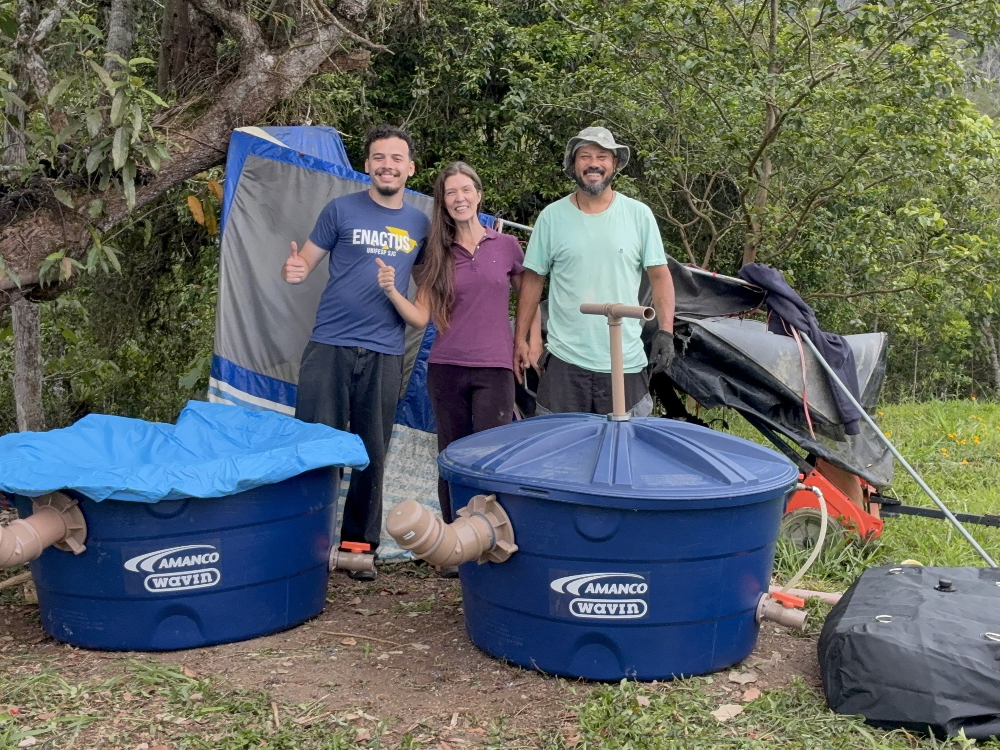
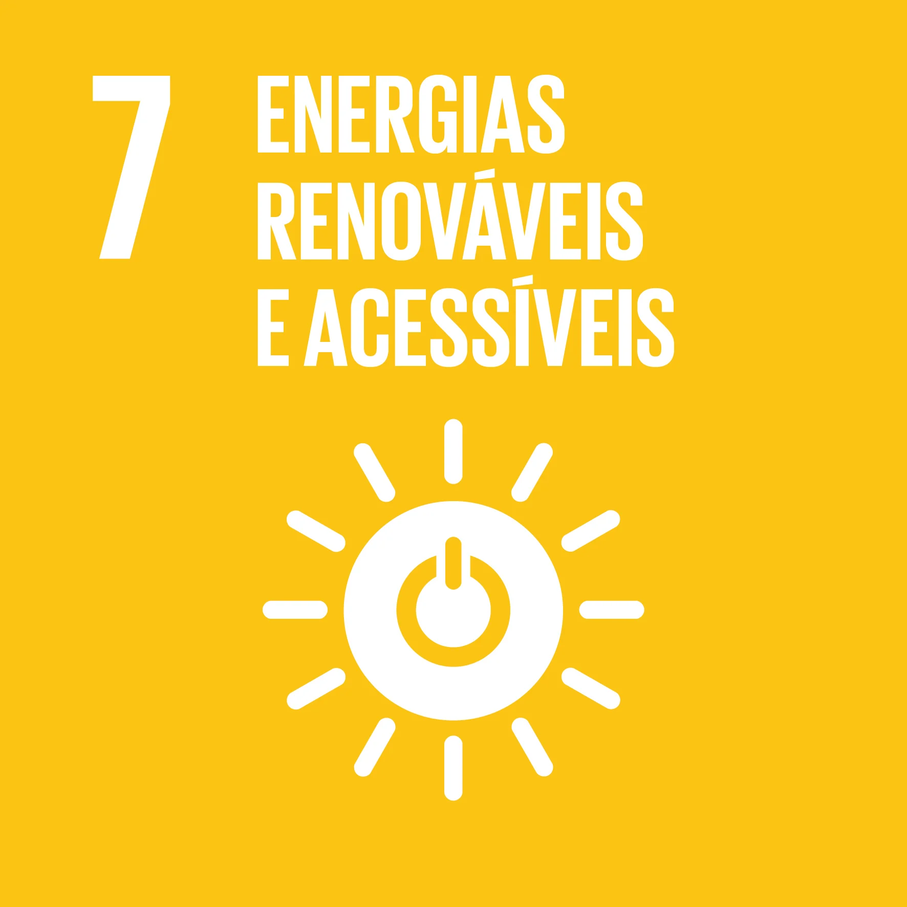
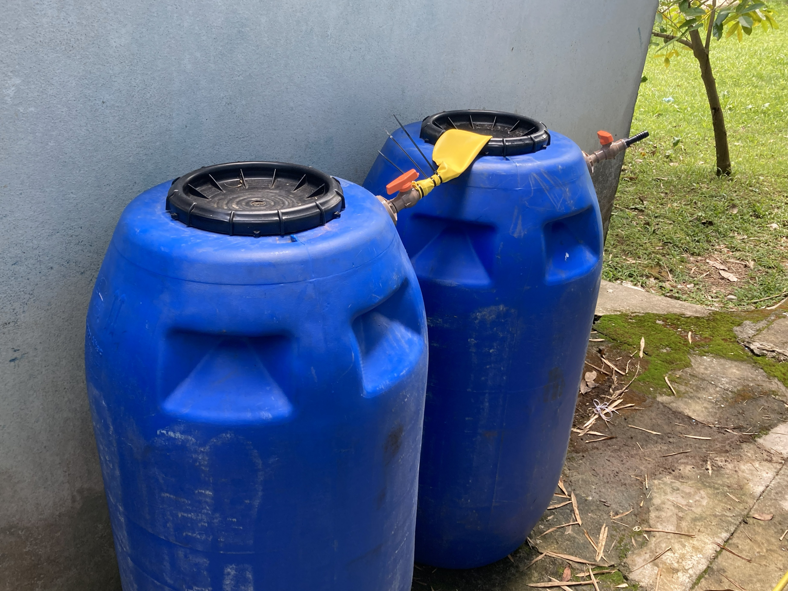
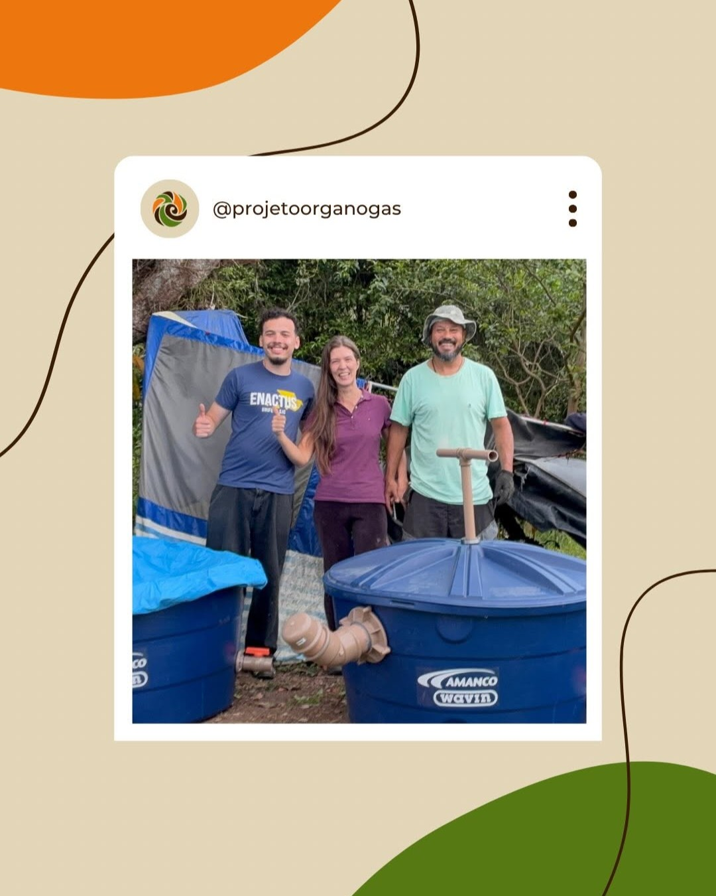
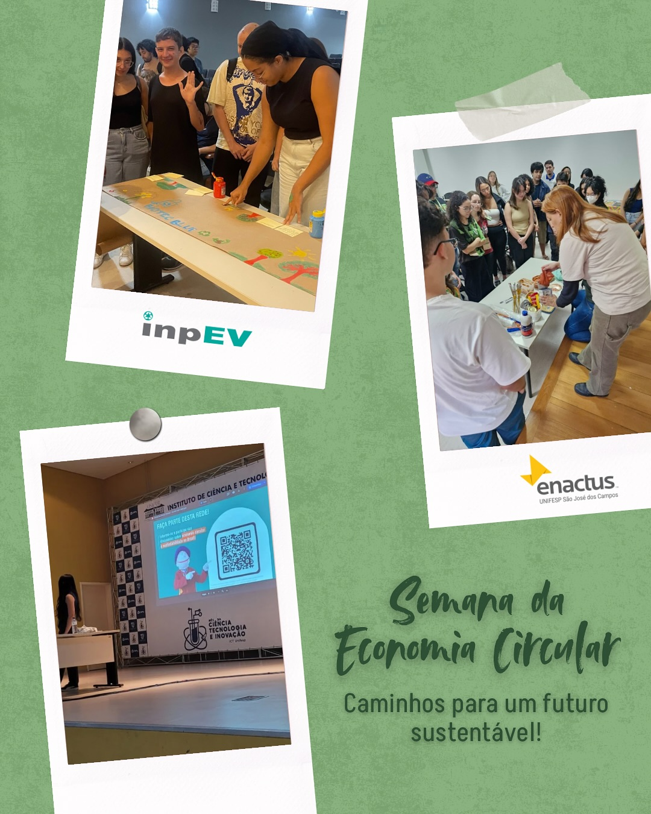
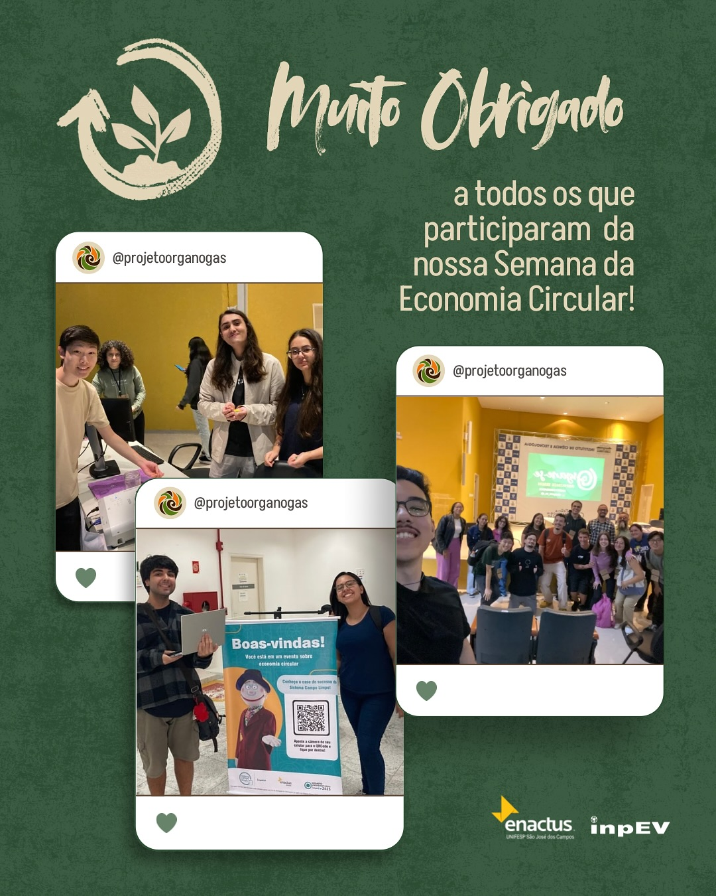

Sobre nós - Organogas
O Organogas é um projeto da Enactus UNIFESP SJC que propõe
transformar o ciclo do desperdício em um novo começo. No Brasil,
mais de 800 milhões de toneladas de alimentos são desperdiçadas
anualmente, sendo que a maior parte dessa perda ocorre ainda na
produção e distribuição.
Nosso propósito é mudar o destino do que sobra para transformar o
futuro. Utilizamos biodigestores anaeróbios para reaproveitar
resíduos alimentícios, convertendo-os em dois subprodutos
valiosos: o biogás, uma fonte de energia limpa, e o
biofertilizante, que devolve nutrientes ao solo. Assim, geramos
energia, alimento e dignidade, apoiando pequenos produtores
rurais.
Objetivos de Desenvolvimento Sustentável que atendemos 🧡

ODS 2: Fome zero e agricultura sustentável
Produzimos um biofertilizante que devolve nutrientes ao solo, substituindo químicos e aumentando a produtividade dos pequenos produtores, garantindo a continuidade do ciclo produtivo.

ODS 7: Energia limpa e acessível
Convertemos resíduos orgânicos em biogás, que pode ser transformado em energia térmica ou elétrica, oferecendo uma alternativa renovável às fontes fósseis.

ODS 12: Consumo e produção responsáveis
Atuamos na redução do desperdício, dando um destino correto aos resíduos orgânicos que, de outra forma, acabariam em lixões, promovendo a economia circular.
Como atuamos
O projeto desenvolveu tecnologias próprias para maximizar a
eficiência, incluindo biodigestores de 500 litros (ampliados com
apoio da Amanco Wavin), filtros de ácido sulfídrico para purificar
o gás e sistemas de armazenamento expansíveis.
Além da inovação técnica, possuímos um modelo de negócio de
impacto social: a cada três biodigestores vendidos, um é doado
para pequenos produtores rurais. Também comercializamos o
biofertilizante concentrado, revertendo parte das vendas para
doações, garantindo acesso à tecnologia e sustentabilidade no
campo.

Resultados 💚
- Biodigestores mais eficientes e baratos: conseguimos reduzir em 52% o custo de fabricação por litro de capacidade dos nossos biodigestores. Isso foi possível ao redimensionarmos o tanque de 220 para 500 litros, otimizando o material utilizado em relação ao volume de resíduos tratados.
- Salto na capacidade de processamento: com a instalação das novas unidades maiores, aumentamos em 227% a capacidade total do projeto de transformar lixo orgânico em recursos, permitindo atender demandas muito maiores.
- Tecnologia aprimorada: desenvolvemos e instalamos cinco melhorias essenciais no sistema, incluindo um filtro de ácido sulfídrico (que torna o biogás mais puro e menos corrosivo) e uma antecâmara de alimentação (que impede a entrada de ar indesejada durante o abastecimento).
- Biofertilizante validado: nossas pesquisas agronômicas comprovaram que o nosso biofertilizante, quando enriquecido com microalgas, gera 2,3 vezes mais brotamento e garante plantas mais resistentes do que o uso de adubos comuns ou resíduos puros.
- Preço justo com impacto real: conseguimos lançar o produto no mercado com um valor 10% abaixo da concorrência. Além disso, viabilizamos nosso modelo "3 para 1": a cada três biodigestores vendidos, financiamos a doação de uma unidade completa para um pequeno produtor rural.
Galeria de fotos 📸
Nosso Instagram 📱
💡 Projeto da @sjcunifespenactus


